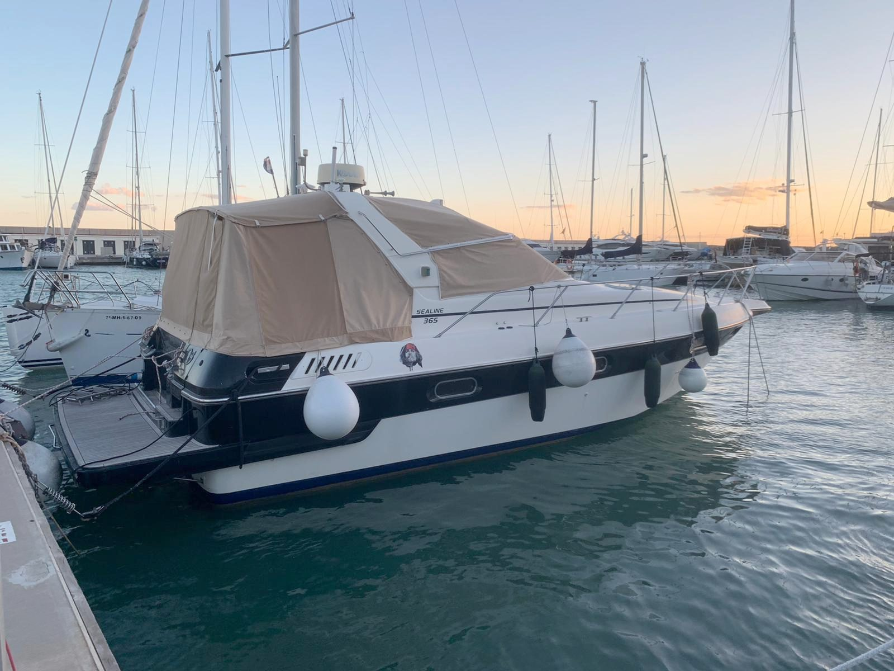

DisponibleSealine 365
75.000 €
1989 · aprox. 11 m · 2 x Volvo Penta TAMD41 200 cv · 1.100 h · Roda de Berà, Tarragona
Dos camarotes y dos baños completos en 11 metros, capacidad para diez. Turbos y baterías nuevos, ITB hasta 2030, Garmin y piloto nuevo.